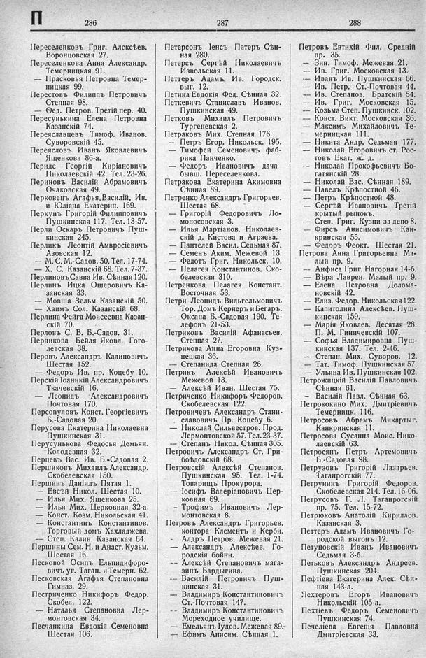

Лист источника 446
Скан

Распознанный текст
П 286 287 288
Переселенковъ Григ. Алексѣев.
Воронцовская 27.
Переселенкова Анна Александр.
Темерницкая 91.
— Прасковья Петровна Темер-
ницкая 99.
Перестовъ Филиппъ Петровичъ
Степная 98.
— Ѳед. Петров. Третій пер. 40.
Пересунькина Елена Петровна
Казанскій 74.
Переяславцевъ Тимоф. Иванов.
Суворовскій 45.
Переясловъ Иванъ Яковлевичъ
Ященкова 86-а.
Периде Георгій Киріановичъ
Николаевскій 42. Тел. 23-26.
Периновъ Василій Абрамовичъ
Очаковская 49.
Перковецъ Агафья, Василій, Ив.
и Юліана Екатерин. 169.
Перкунъ Григорій Филипповичъ
Пушкинская 117. Тел. 13-57.
Перли Оскаръ Петровичъ Пуш-
кинская 245.
Перликъ Леонтій Амвросіевичъ
Азовская 12.
— М. С. М.-Садов. 50. Тел. 17-74.
— Х. С. Казанскій 68. Тел. 7-37.
Перлиновъ Савва Ив. Сѣнная 120.
Перлинъ Ицка Ошеровичъ Ка-
занская 33.
— Мовша Зельм. Казанскій 50.
— Хаимъ Сол. Казанскій 68.
Перлина Фейга Моисеевна Казан-
скій 70.
Перловъ С. В. Б.-Садов. 31.
Перникова Бейля Яковл. Гого-
левская 38.
Перовъ Александръ Калиновичъ
Шестая 152.
— Федоръ Ив. пр. Коцебу 10.
Перскій Іоаникій Александровичъ
Ткачевскій 16.
— Леонидъ Александровичъ
Почтовая 170.
Персопуловъ Конст. Георгіевичъ
Б.-Садовая 20.
Перусова Екатерина Николаевна
Пушкинская 31.
Перусунькова Федосья Демьян.
Колодезная 32.
Перцевъ Вас. Ив. Б.-Садовая 2.
Першиковъ Михаилъ Александр.
Скобелевская 150.
Першинъ Даніилъ Пятая 1.
— Евсѣй Никол. Шестая 10.
— Илья Мих. Ященкова 25.
— Илья Мих. Церковная 32-а.
— Конст. Козм. Никольская 41.
— Константинъ Константинов.
Торговый домъ Хахладжева.
— Степ. Калин. Казанская 64.
Першины Сем. Н. и Анаст. Кузьм.
Шестая 16.
Песковой Осипъ Ельпидифоро-
вичъ уг. Таган. и Темерн. 62.
Песковская Агафья Степановна
Гимназ. 29.
Пестриченко Никифоръ Федор.
Скобел. 122.
— Наталья Степановна Лер-
монтовская 34.
Песчанкина Евдокія Семеновна
Шестая 106.
Петерсонъ Іенсъ Петеръ Сѣн-
ная 280.
Петерсъ Сергѣй Николаевичъ
Извольская 11.
Петтеръ Адамъ Ив. Городск.
выг. 12.
Петина Евдокія Фед. Сѣнная 32.
Петкевичъ Станиславъ Иванов.
Пушкинская 49.
Петковъ Михаилъ Петровичъ
Тургеневская 2.
Петраковъ Мих. Степная 176.
— Петръ Егор. Никольск. 195.
— Тимофей Семеновичъ фаб-
рика Панченко.
— Федоръ Ивановичъ дача
бывш. Переселенкова.
Петракова Екатерина Акимовна
Сѣнная 89.
Петренко Александръ Григорьев.
Шестая 68.
— Григорій Федоровичъ Ло-
моносовская 3.
— Илья Мартіанов. Николаев-
скій д. Кистова и Аграева.
— Пантелей Васил. Седьмая 87.
— Семенъ Аким. Межевой 13.
— Федотъ Григ. Никольск. 10.
— Пелагея Константинов. Ско-
белевская 310.
Петренкова Пелагея Констант.
Восточная 53.
Петри Леонидъ Вильгельмовичъ
Тор. Домъ Кернеръ и Бегаръ.
— Оксана Б.-Садовая 190. Те-
лефонъ 21-53.
Петриковъ Василій Афанасьев.
Степная 27.
Петрикова Анна Егоровна Куз-
нецкая 36.
— Степанида Степная 26.
Петрикъ Алексѣй Ивановичъ
Межевой 13.
— Алексѣй Иван. Шестая 75.
Петриченко Никифоръ Федоров.
Скобелевская 122.
Петровичевъ Александръ Стани-
славовичъ Пр. Коцебу 6.
— Николай Сильвестров. Прод.
Лермонтовской 57. Тел. 23-37.
— Степанъ Никол. Сѣнная 305.
Петровичъ Александръ Ст. Гри-
боѣдовскій 68.
Петровскій Алексѣй Степанов.
Пушкинская 95. Тел. 1-74.
Товарищъ Прокурора.
— Іосифъ Валеріановичъ Цер-
ковная 69.
— Трофимъ Ивановичъ Лер-
монтовская 8.
Петровъ Александръ Григорьев.
контора Клементъ и Керби.
— Алдръ Петров. Межевая 21.
— Александръ Алексѣев. Го-
родскія бойни.
— Алексѣй Степановичъ мага-
зинъ Бардыгина.
— Василій Петровичъ Пуш-
кинская 31.
— Владимиръ Константиновичъ
Ст.-Почтовая 147.
— Владимиръ Константиновичъ
Мореходное училище.
— Емельянъ Іудов. Межевая 89.
— Ефимъ Анисим. Сѣнная 1.
Петровъ Евтихій Фил. Средній
пр. 35.
— Зин. Тимоф. Межевая 21.
— Ив. Григ. Московская 13.
— Иванъ Ив. Пушкинская 66.
— Ив. Петр. Ст.-Почтовая 44.
— Ив. Степанов. Братскій 54.
— Ив. Григ. Московская 15.
— Козьма Степ. Пушкинск. 102.
— Конст. Викт. Московская 36.
— Максимъ Михайловичъ Те-
мерницкая 111.
— Никита Андр. Седьмая 177.
— Николай Егоровичъ ст. Рос-
товъ Екат. ж. д.
— Николай Прокофьевичъ Бо-
гатянскій 28.
— Николай Вас. Сѣнная 189.
— Павелъ Крѣпостной 46.
— Петръ Крѣпостной 48.
— Сергѣй Ивановичъ Третій
крытый рынокъ.
— Степ. Григ. Кузни за депо 8.
— Фирсъ Анисимовичъ Кан-
кринская 55.
— Федоръ Феокт. Шестая 21.
Петрова Анна Григорьевна Ма-
лый пр. 9.
— Анфиса Григ. Нагорная 14-б.
— Вѣра Лаврен. Малый пр. 9.
— Елена Петровна Долома-
новскій 42.
— Елиз. Федор. Никольская 122.
— Капитолина Алексѣев. Пуш-
кинская 159.
— Марія Яковлев. Десятая 28.
П. М. Гиничевскій 107.
— Софья Владимировна Пуш-
кинская 137. Тел. 2-46.
— Степан. Мих. Суворов. 12.
— Тат. Тимоф. Пушкинская 57.
— Ульяна Ив. Пушкинская 102.
Петрожицкій Василій Павловичъ
Сѣнная 61.
— Василій Павл. Сѣнная 63.
Петрококино Мих. Дмитріевичъ
Темерницк. 116.
Петросовъ Абрамъ Микартыг.
Канкринская 11.
Петросова Сусанна Моис. Нико-
лаевскій 63.
Петросянъ Петръ Артемовичъ
Б.-Садовая 98.
Петрузовъ Григорій Лазарьев.
Таганрогскій 77.
Петрунинъ Григорій Федоров.
Скобелевская 214. Тел. 16-06.
Петрусовъ Г. Л. Таганрогскій
пр. 75. Тел. 15-72.
Петрюковъ Анатолій Кириллов.
Казанская 3.
Петтеръ Адамъ Ивановичъ Го-
родской выгонъ 12.
Петуновскій Иванъ Ивановичъ
Седьмая 3-б.
Петьковъ Александръ Андреев.
Пушкинская 204.
Пефтіева Екатерина Алек. Сѣн-
ная 143-а.
Пехтеровъ Егоръ Ивановичъ
Никольскій 105-а.
Пехтіевъ Федоръ Семеновичъ
Пушкинская 74.
Печеліева Евгенія Павловна
Дмитріевская 33.